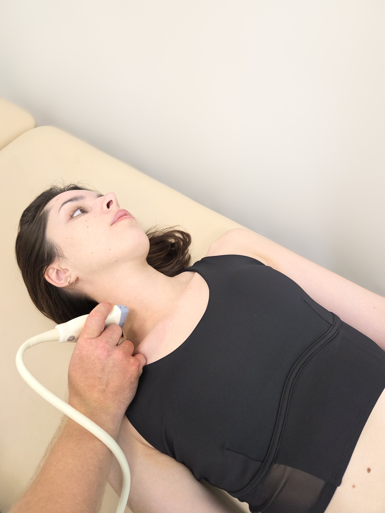

Пошаговые инструкции
Шаг 1: Позиционирование пациента
Уложите пациента в положение на спине. Для лучшей визуализации можно подложить валик под плечи и использовать положение Тренделенбурга. Голова пациента должна быть повернута в сторону, противоположную месту измерения.
Шаг 2: Визуализация и идентификация структур
Используйте линейный высокочастотный датчик. Установите датчик в надключичной области. Выведите в поперечном сечении круглую, неспавшуюся сонную артерию и расположенную латеральнее овальную, легко сжимаемую яремную вену.
Шаг 3: Проведение измерений в М-режиме
Активируйте М-режим, проведя курсор через центр яремной вены. На полученной развертке измерьте максимальный диаметр вены (Hmax, обычно на выдохе) и минимальный диаметр (Hmin, обычно на вдохе).
Калькулятор для практики
Результат
...